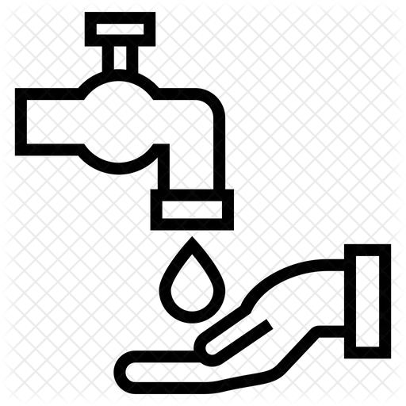
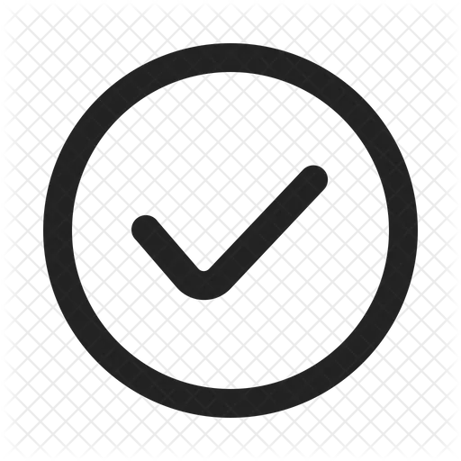
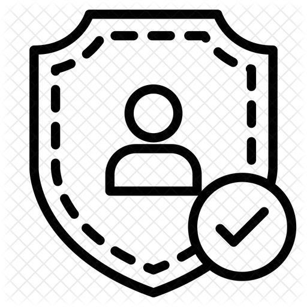
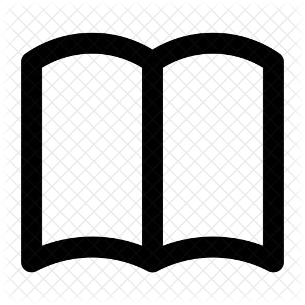

Nos Missions
La CNAC intervient dans quatre domaines clés pour assurer une meilleure gourvernance, protéger l'environnement et renforcer le trésor public de la République Démocratique du Congo.

Assainissement
Protection de l'environnement et assainissement du milieu public pour une vie saine et durable.
Objectifs

Assurer la proprété des espaces publics
Protéger l'environnement naturel
Sensibiliser la communauté aux enjeux sanitaires
Collecter les taxes d'assainissement
Activités Prinicipales
- Assainissement des marchés et espaces publics
- Gestion des déchets et recyclage
- Campagnes de sensilibilisation environnementale
- contrôle de la pollution
- Perception de la taxe d'assainissement auprès des établissements publics et privés
Impact Attendu
Amélioration de la qualité de vie des citoyens, réduction des maladies liées à l'insalubrité, et protection des ressources naturelles.

Contrôle & Lutte
contre la Fraude
Lutte contre la fraude et les détournements de deniers publics pour renforcer le trésor public.
Objectifs
Prévenir et combattre la fraude fiscale
Détecter les faux documents et actes frauduleux
Poursuivre les auteurs des détournements
Renforcer le trésor public
Activités Prinicipales
- Contrôle des actes faux et usage de faux
- Détection des détournements de deniers publics
- Imposition des amendes transactionnelles
- Collaboration avec les services de justice et de sécurité
- Enquêtes et investigations
- Rétention des suspects (24heures maiximum)
Impact Attendu
Réduction de la fraude, augmentation des recettes publiques, et renforcement de la confiance dans les institutions.

Formation &
Renforcement des Capacités
Renforcement des capacités des agents pour une meilleure efficacité opérationnelle.
Objectifs
Amélioration les comportements des agents
Assurer la conformité aux normes professionnelles
Promouvoir l'excellence opérationnelle
Développer le leadership et l'éthique
Activités Prinicipales
- Programmes de formation continue
- Ateliers et séminaires spécialisés
- Evaluation des performances
- Développement professionnel
- Formation en éthique et intégrité
- Echange d'expériences et bonnes pratiques
Impact Attendu
Amélioration de la qualité des services, augmentation de la productivité, et renforcement de la culture d'excellence.
Vous avez des questions ?
Contactez-nous pour obtenir plus d'informations sur nos missions et comment nous pouvons vous aider.